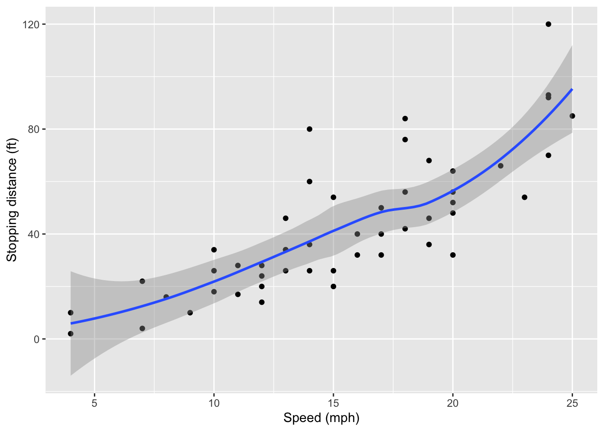

sin(8)[1] 0.9893582Here are some things you can do:
sin(8)[1] 0.9893582You an include citations in your Quarto document by putting a bibliography file (e.g., Bibtex format) in the directory where the document lives and indicating its location in the bibliography: tag in the YAML. Then you can put formatted citations into the text by tagging them with the @ symbol. Datalab is a service unit within UC Davis library (Jared Joseph (2017)). By default the bibliography goes at the end of the chapter, but you can control that wil YAML settings.
There is support for LaTeX style math1. There are
\bar{X} = \frac{1}{N} \Sigma_{i=1}^N X_i
library( ggplot2 )
data(cars)
ggplot(cars) +
aes(x=speed, y=dist) +
geom_point() +
geom_smooth() +
xlab( "Speed (mph)") +
ylab( "Stopping distance (ft)")`geom_smooth()` using method = 'loess' and formula = 'y ~ x'
print("hello world!")hello world!Check out Figure 2.1.
Everybody loves Figure 2.3.
Have you ever seen an Figure 2.2?